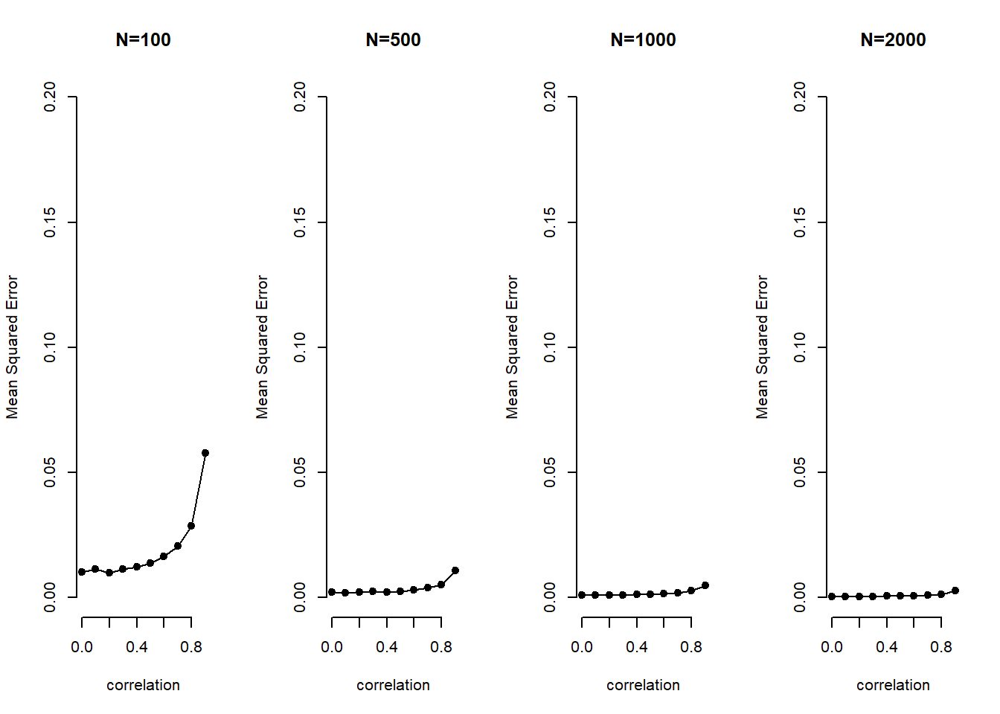
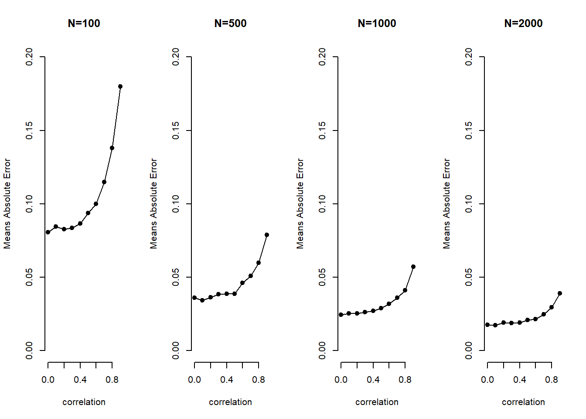

We set up an MC analysis to see whether problems of multicollinearity (high correlation between explanatory variables) go away as the sample size increases. The goal is see how well we are able to retrieve the true value of \(\beta_{1}\) for varying strengths of correlation and sample sizes.
The basic setup of the simulation is as follows:
# the number of runs (simulations)
sim.n <- 1000
# sequence of low to high correlation
Rho <- seq(from = 0, to = .9,length.out=10)
# vector of sample sizes
sample.N <- c(100, 500, 1000, 2000)We create a container beta.catcher that stores coefficient values for different simulations. The container is a 3-dimensional array where the first dimension is the number of simulations, the second is the sample size, the third is correlation.
# rows = simulations, columns = sample size, layers = correlation
beta.catcher <- array(NA, c(sim.n, 4, 10))We start simulating. This will take a while because we are iterating through \(sim.n * Rho * sample.N\) iterations, i.e. \(40,000\) iterations. Each time we regress \(y\) on our covariates.
# loop over the correlations
for (i in 1:length(Rho)){
# loop over sample sizes
for (j in 1:4){
# loop over the random draws (number of simulations)
for (k in 1:sim.n){
# current correlation
rho <- Rho[i]
# current sample size
sample.n <- sample.N[j]
# variance covariance matrix current corr on off-diagonal
varL <- matrix(c (1,rho,rho,1) , nrow = 2, ncol = 2)
# random draw of covariates as many as sample size
XX <- MASS::mvrnorm(sample.n, rep(0,2), varL)
# random noise
e <- rnorm(sample.n)
# the true data generation process b1 = 1; b2 = 1
y <- XX %*% c(1,1) + e
# we regress the true y on the covariates and extract beta 1
beta.catcher[k,j,i] <- coef(lm(y~XX))[2]
} # end of loop over number of sims
} # end of loop over sample sizes
} # end of loop over correlationsYou can have a look at the container by calling it with beta.catcher. We remind ourselves of the dimensions with:
dim(beta.catcher)## [1] 1000 4 10We take the MSE of each coefficient estimate in the container. This is an element-wise operation so the resulting object error.sq has the same dimensions as the container.
error.sq <- (beta.catcher-1)^2 We average over the simulations by taking the column means. This returns a matrix where the rows are now the different sample sizes (previously in the columns) and the columns are the correlations (previously in the layers). The matrix mse.beta, thus, has 4 rows and 10 columns.
mse.beta1 <- colMeans(error.sq) To show the effect of multicollinearity for increasing levels of correlation and for increasing sample sizes, we plot correlation on the x-axis and the MSE on the y-axis in four plots where sample size increases by plot.
par(mfrow=c(1,4))
plot(c(0:9)/10,mse.beta1[1,], xlab="correlation", ylab="Mean Squared Error", type="o", pch=19, bty="n", main="N=100", ylim=c(0,.2))
plot(c(0:9)/10,mse.beta1[2,], xlab="correlation", ylab="Mean Squared Error", type="o", pch=19, bty="n", main="N=500", ylim=c(0,.2))
plot(c(0:9)/10,mse.beta1[3,], xlab="correlation", ylab="Mean Squared Error", type="o", pch=19, bty="n", main="N=1000", ylim=c(0,.2))
plot(c(0:9)/10,mse.beta1[4,], xlab="correlation", ylab="Mean Squared Error", type="o", pch=19, bty="n", main="N=2000", ylim=c(0,.2))
error.abs <- abs(beta.catcher-1)
mae.beta1 <- colMeans(error.abs)
par(mfrow=c(1,4))
plot(c(0:9)/10,mae.beta1[1,], xlab="correlation", ylab="Means Absolute Error", type="o", pch=19, bty="n", main="N=100", ylim=c(0,.2))
plot(c(0:9)/10,mae.beta1[2,], xlab="correlation", ylab="Means Absolute Error", type="o", pch=19, bty="n", main="N=500", ylim=c(0,.2))
plot(c(0:9)/10,mae.beta1[3,], xlab="correlation", ylab="Means Absolute Error", type="o", pch=19, bty="n", main="N=1000", ylim=c(0,.2))
plot(c(0:9)/10,mae.beta1[4,], xlab="correlation", ylab="Means Absolute Error", type="o", pch=19, bty="n", main="N=2000", ylim=c(0,.2))
The two take-aways are that (1) with increasing sample size the problem of multicollinearity decreases substantially and (2) bias increases exponentially with increasing levels of correlation.